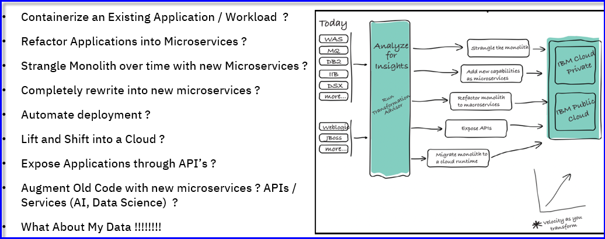

Modernize Existing Applications with IBM Transformation Advisor and IBM Cloud Pak for Applications
1. Recordings and demos
Using IBM Transformation Advisor to assess your application portfolio for modernization recommendations
IBM Cloud Transformation Advisor helps you to analyze your on-premises workloads for modernization. It determines the complexity of your applications, estimates a development cost to perform the move to the cloud, and recommends the best target environment.
a. Understanding the value of IBM Transformation Advisor
2 minutes
b. Demonstration: How to use Transformation Advisor to assess my WebSphere Applications
See for yourself how IBM Transfromation Advisor is used to easily assess your existig WebSphere workloads and delivers insights into the feasabilty of modernizing the applications for containers and cloud.
7 minutes
2. Get the IBM Application Modernization Field Guide
Business pressures demand faster time to market and app modernization. IBM can make this easy for you and bring immediate benefits:
-
Accelerate digital transformation. App modernization is driven by the need to transform business to build new capabilities and deliver them quickly.
-
Improve developer productivity. Enabling self service for developers through adoption of cloud native and containerization.
-
Improve operational efficiency and standardization. DevOps enablement drives a culture of automation and transformation of operations.
Rewriting your entire estate is a pipe dream. Modernization comes in many flavors. IBM’s skills and experience in middleware provide unique insights and approaches to modernize your existing estate with speed, confidence, and reduced risk. View your development investments as an asset, not a liability.
Refactor what’s necessary, but don’t necessarily refactor.
